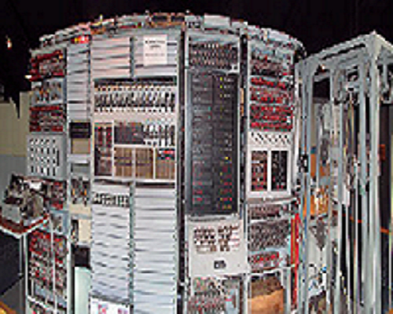

|  |
Os Colossi foram uma série de computadores desenvolvidos na Inglaterra durante a Segunda Guerra Mundial para quebrar criptografia alemã, desempenhando um papel crucial na decodificação de mensagens secretas e ajudando a acelerar o fim da guerra. O primeiro protótipo, o Colossus Mark I, foi concluído em dezembro de 1943 e começou a operar no início de 1944 em Bletchley Park, o centro de decodificação britânico. Até o final da guerra, foram construídos um total de 11 Colossi. O projeto foi liderado pelo engenheiro Thomas H. Flowers. Embora Alan Turing tenha ajudado no desenvolvimento e tenha recomendado Flowers para o projeto, o Colossus e a Bomba Criptológica de Turing eram máquinas distintas, com diferentes objetivos e princípios de funcionamento. O Colossus foi projetado para quebrar mensagens cifradas por uma máquina que, na época, era desconhecida, mas que posteriormente foi identificada como a Lorenz SZ. O Colossus utilizava técnicas diferentes daquelas empregadas pela Bomba Criptológica de Turing. A Bomba de Turing era especificamente projetada para decifrar mensagens codificadas pela máquina Enigma. Enquanto isso, o Colossus lidava com a decodificação de códigos gerados por sistemas diferentes. Os Colossi foram pioneiros na computação digital eletrônica e desempenharam um papel crucial na Segunda Guerra Mundial ao decodificar mensagens criptografadas pela Lorenz SZ. Desenvolvidos sob a liderança de Thomas H. Flowers e com a influência de Alan Turing, os Colossi representam um avanço significativo na história da computação, mesmo que sua importância só tenha sido amplamente reconhecida décadas após o fim da guerra. |